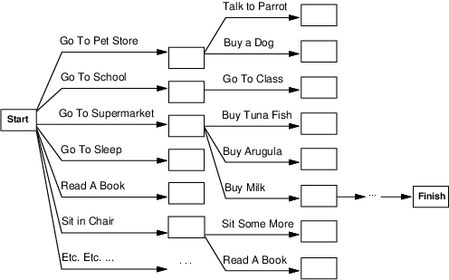
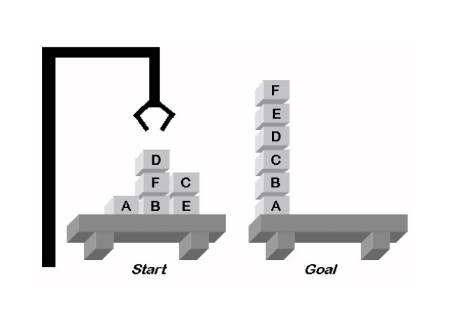
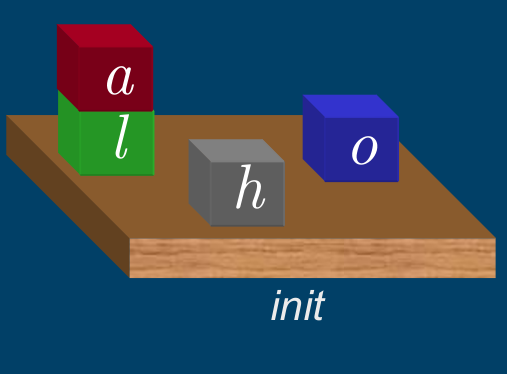
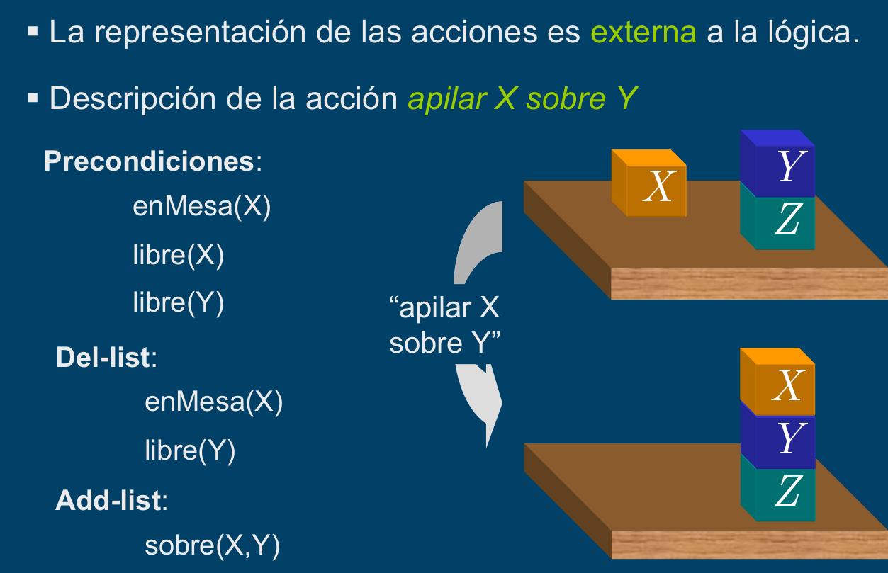
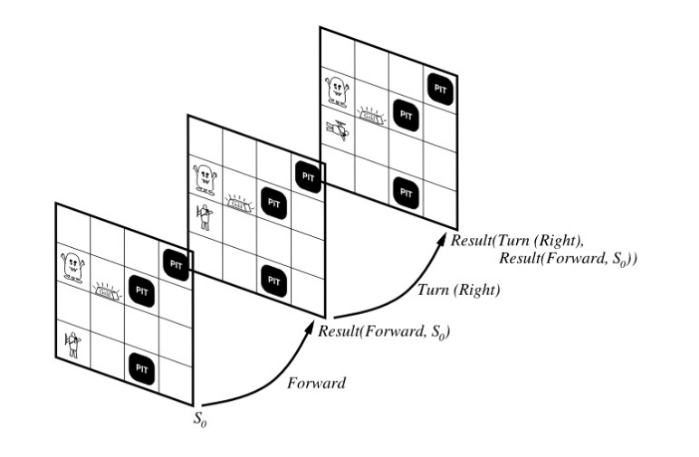
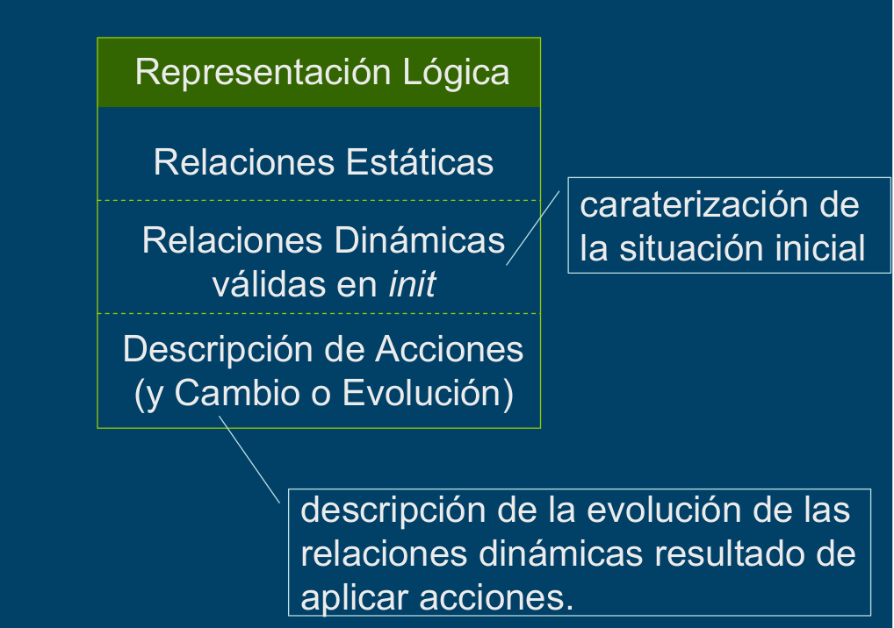
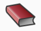

Created: 2023-11-09 jue 10:46
Consideremos la tarea de obtener leche, bananas y una licuadora Los algoritmos estándar de búsqueda parecen fallar:

Aún si tuviéramos una heurística.
Con Planning podemos :
| Búsqueda | Planning | |
| Estados | Estructura de Datos | Sentencias Lógicas |
| Acciones | Código | Precondiciones/Efecto |
| Meta | Estructura de Datos | Sentencias Lógicas |
| Plan | Secuencia desde \(S_0\) | Secuencia con restricciones sobre las acciones |
Utilizaremos la Estructura Lógica del Problema
Representación de Estados
El mundo es una conjunción de literales.
Representación de Metas
Es un estado particular, representado por una conjunción de literales.
Definición
Un estado proposicional \(\color{red}{s}\) satisface una meta \(\color{red}{g}\) si \(\color{red}{s}\) contiene todos los átomos en \(\color{red}{g}\) (y posiblemente otros).
Las especificamos en términos de Precondiciones/Efectos.
PRECONDI CIONES Literales que deben ocurrir antes de que la acción sea ejecutada
\(\to\) ACCION \(\to\)
EFECTOS Aquello que será consecuencia de la ejecucción de la acción.
Las especificamos en términos de Precondiciones/Efectos.
PRECONDI CIONES \(at(p,from) \wedge\) \(plane(p) \wedge\) \(airport(from) \wedge\) \(airport(to)\)
\(\to\) \(\color{orange}{fly(p,from, to)}\) \(\to\)
EFECTOS \(\neg at(p,from) \wedge\) \(at(p, to)\)
¿Cuáles son las precondiciones para que una acción tenga éxito?
Precondiciones
\(\to\) arrancar el auto \(\to\)
El problema de las circunstancias no representadas que podrían causar que una acción falle se conoce como Qualification Problem.
¿Cuáles son los efectos de una acción?
vuela el avión A847 de Nqn a Bs As
EFECTOS
El problema de las circunstancias no representadas que son efecto de la ejecución de una acción se conoce como Problema de la Ramificación.
¿Qué elementos permanecen sin cambios cuando una acción es ejecutada?
ANTES DE LA ACCION
\(\to\) arrancar el auto \(\to\)
DESPUES DE LA ACCION
El problema de representar todas las circunstancias que permanecen sin cambios se conoce como Problema del Frame.
Necesitamos una solución eficiente a este problema ya que en el mundo real casi todo permanece igual la mayoría del tiempo.
Una acción es aplicable en cualquier estado que satisface las precondiciones.
Ejemplo
El estado \(s=\{at(A810,JN)\wedge at(A550,JFK)\wedge plane(A810)\wedge plane(A550)\wedge\) \(airport(JN)\wedge airport(JFK)\}\)
satisface la precondición:
\[\color{red}{at(p,from)\wedge plane(p)\wedge airport(from)\wedge airport(to)}\]
con \(\theta=\{p/A810, from/JN, to/JFK\}\).
Luego la acción \(\color{red}{fly(A810,JN,JFK)}\) es aplicable
Una secuencia de acciones que cuando es ejecutada desde el estado inicial resulta en un estado que satisface la meta.
Representación de Estados
El mundo es una conjunción de literales proposicionales: ground y function-free. Utilizamos CWA
Ejemplo
\(at(agent1, neuquen)\)
Esquema de Acción
Representa un número diferente de acciones que pueden ser derivadas instanciando las variables.
Acción
STRIPS la representa con tres listas:
Lista de Precondiciones
Literales que deben cumplirse para que la acción pueda ser exitosa.
Lista de Agregados
Literales positivos que agregamos para generar el nuevo estado.
Lista de Borrados
Literales positivos que quitamos porque dejaron de tener efecto en el nuevo estado.
Ejemplo
PRECONDI CIONES \(at(p,from) \wedge\) \(plane(p) \wedge\) \(airport(from) \wedge\) \(airport(to)\)
\(\to\) \(\color{orange}{fly(p,from, to)}\) \(\to\)
EFECTOS Add List={\(at(p, to)\)} Delete List={\(at(p,from)\)
Ejemplo
El estado \(s=\{at(A810,JN)\wedge at(A550,JFK)\wedge plane(A810)\wedge plane(A550)\wedge\) \(airport(JN)\wedge airport(JFK)\}\)
satisface la precondición:
\[\color{red}{at(p,from)\wedge plane(p)\wedge airport(from)\wedge airport(to)}\]
con \(\theta=\{p/A810, from/JN, to/JFK\}\).
Luego la acción \(\color{red}{fly(A810,JN,JFK)}\) es aplicable
Solucion
Nuevo estado \(s^\prime\):
\(s^\prime\ = \ s\ -\ \{at(A810,JN)\} \ \cup \ \{at(A810,JFK)\}\)
| Lenguaje STRIPS | Lenguaje ADL |
| Sólo literales positivos en los estados: \(poor\wedge unknown\) | Literales positivos y negativos en los estados: \(\neg rich \wedge \neg famous\) |
| Closed World Assumption: Literales no mencionados son falsos | Open World Assumption: Literales no mencionados son desconocidos |
| El efecto de \(P\wedge \neg Q\) significa agregue \(P\) y borre \(Q\) | El efecto de \(P\wedge \neg Q\) significa agregue \(P\) y \(\neg Q\) y borre \(\neg P\) y \(Q\) |
| Sólo se permiten literales ground en las metas: \(rich \wedge famous\) | Se permiten variables cuantificadas en las metas: \(\exists X \ at(p1,X)\wedge at(p2,X)\) |
| Las metas son conjunciones | Las metas permiten conjunciones y disyunciones |
| No soporta la igualdad | Predicados de igualdad \((x=y)\) predefinidos |
| No soporta tipos | Las variables pueden tener tipos (p:Plane). |
Surge como combinación de STRIPS y ADL.
| Lenguaje STRIPS | PDDL |
| Sólo literales positivos en los estados: \(poor\wedge unknown\) | Literales positivos y negativos en los estados: \(\neg rich \wedge \neg famous\) |
| Closed World Assumption | Open World Assumption |
| El efecto de \(P\wedge \neg Q\) significa agregue \(P\) y borre \(Q\) Tiene dos listas Agregados/Borrados | El efecto de \(P\wedge \neg Q\) significa agregue \(P\) y \(\neg Q\) y borre \(\neg P\) y \(Q\) Sólo tiene un conjunto de EFECTOS |
| Sólo se permiten literales ground en las metas: \(rich \wedge famous\) | Se permiten variables cuantificadas en las metas: \(\exists X \ at(p1,X)\wedge at(p2,X)\) |
| Las metas son conjunciones | Las metas permiten conjunciones y disyunciones |
| No soporta tipos | Las variables pueden tener tipos (p:Plane). |

Mundo de Bloques: Definición de Dominio
ACCIONES
Mover mueve un bloque que está sobre la mesa sobre otro

Relaciones para representar
Mundo de Bloques: Definición de Dominio
ACCIONES
Mover mueve un bloque que está sobre la mesa sobre otro
Relaciones para representar
\(\color{green}{on(X,Y) \mbox{ o } sobre(X,Y)}\)
Es verdadero cuando el bloque X está sobre Y, donde Y es otro bloque o la mesa.
\(\color{green}{move(B,X,Y)}\)
Acción de mover el bloque B del tope de X a Y.
Precondiciones en ADL
\(\neg\exists X On(X,B)\)
\(\neg\exists X On(X,Y)\)
Precondiciones en STRIPS
\(Clear(B)\)
\(Clear(Y)\)
\(On(B,X)\)
Efectos en ADL
\(\neg On(B,X)\)
\(On(B,Y)\)
Efectos en STRIPS
Lista de Agregados: {\(Clear(X) , On(B,Y)\)}
Lista de Borrados: {\(Clear(Y), On(B,X)\)}
Situaciones especiales:

En vez de concentrarnos en tiempos nos concentramos en situaciones:

De esta manera es posible representar, en la lógica, sentencias que hablan de/se refieren a acciones y estados particulares.
Representamos a las situaciones como:
\[S_0 \ \ \stackrel{A_0}{\longrightarrow}{}\ \ \stackrel{result(A_0,s_0)}{do(A_0,s_0)}\ \ \stackrel{A_1}{\longrightarrow}{}\ \ \ \stackrel{result(A_1,result(A_0,s_0))}{do(A_1,do(A_0,s_0))}\]
Predicados Atemporales
Son predicados que permanecen invariables en todas las situaciones. Ejemplo: \(agente(bond)\)
Fluentes
Son predicados que varían desde alguna situación a la siguiente.
Representación de un Estado
Fórmulas lógicas con un parámetro más que indica la situación en la que es verdadera.Ejemplo: \[at(bond,[1,1],S_0)\] \[holding(bond,gun,do(get(gun), do(go([1,1],[2,2]),S_0)))\] \[agente(bond)\]

Representación de una Acción
\(\color{cyan}{Move(B,X,Y)}\)
poss(move(B,X,Y),S) \(\leftarrow\) bloque(B),bloque(X),bloque(Y),clear(Y,S),clear(B,S), on(B,X,S).
Estado Sucesor
\(\Bigr(\) clear(X,do(A,S))\(\leftrightarrow\) \(\bigl(\) A=move(B,X,Y) \(\vee\) \(( clear(X,S) \wedge A\neq move(B,Z,X) \bigl)\Bigl)\).
Siguiendo notación de Poole, utilizamos dos reglas:
Ax de efecto:
Ax de frame:
clear(X,do(move(B,X,Y),S))\(\leftarrow\) poss(move(B,X,Y),S).
clear(X,do(A,S))\(\leftarrow\) clear(X,S) \(\wedge\) poss(A,S) \(\wedge\) A \(\neq\) move(B,Z,X)
Un fluente es verdadero en un punto en el tiempo \(\color{green}{t}\)
\(\color{green}{event(E,T)}\)
El evento \(E\) ocurrió en el tiempo \(T\).
Para cada evento debemos especificar aquello que hace verdadero y aquello que deja de ser verdadero:
\(\color{green}{initiates(E,P,T)}\)
Es verdadero si el evento E hace al predicado P verdadero en el tiempo T.
\(\color{green}{terminates(E,P,T)}\)
Es verdadero si el evento E hace que el predicado P deje de ser verdadero en el tiempo T.
Para cada fluente, deberemos determinar si éste ocurre o no en un tiempo particular:
\(holds(P,T) \leftarrow\)
\(event(E,T0) \wedge T0 < T \wedge\) \(\color{green}{initiates(E,P,T0)} \wedge\) \(\sim clipped(P,T0,T)\).
\(clipped(P,T0,T)\leftarrow\)
\(event(E1,T1) \wedge\) \(\color{green}{terminates(E1,P,T1)} \wedge\) \(T0 < T1 \wedge T1 < T\).
\(\color{green}{move(B,X,Y))}\)
\(initiates(move(B,X,Y),clear(X),T) \leftarrow poss(move(B,X,Y),T)\).
\(initiates(move(B,X,Y),on(B,Y),T) \leftarrow poss(move(B,X,Y),T)\).
\(terminates(move(B,X,Y),clear(Y),T) \leftarrow poss(move(B,X,Y),T)\).
\(terminates(move(B,X,Y),on(B,X),T) \leftarrow poss(move(B,X,Y),T)\).
\(poss(move(B,X,Y),T) \leftarrow\)
\(holds(clear(B),T) \wedge\) \(holds(clear(Y),T) \wedge\) \(holds(on(B,X),T)\)
Espacio de Estados: en lugar de considerar el tiempo explícitamete, podemos considerar a las acciones como mapeando de un estado a otro del mundo. Ej: Cálculo de Situaciones y STRIPS.
El tiempo pude incorporarse a un sistema de Rep. de Conoc. y Razonamiento de diferentes formas:
El Tiempo se encuentra reificado. ie, el tiempo es otro objeto más, que se representa y del que se puede hablar, en la lógica. Concretamente, se puede agregar un argumento a las relaciones para especificar cuando valen. Ej: pasa-autobus(\(101\), cuadra(Mitre, \(200\)), pm(\(15:35\))) Ej Cálculo de Situaciones
 S. Russell y P.Norvig Artificial Intelligence: A Modern Approach (Third Edition). Capítulo 10 2009
D. Poole, A. Mackworth y R. Goebel Computational Intelligence: A Logical Approach. Capítulo 8 1998